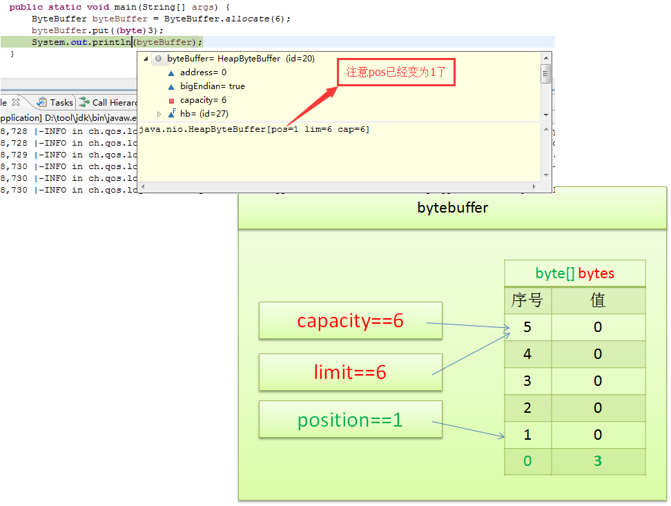
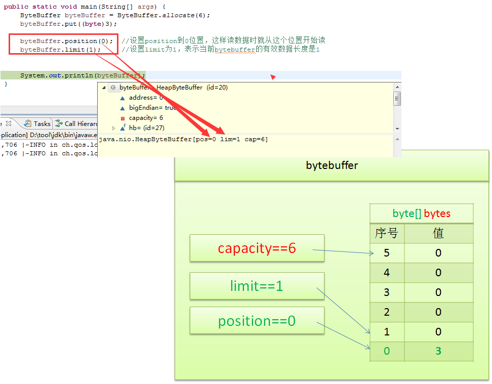
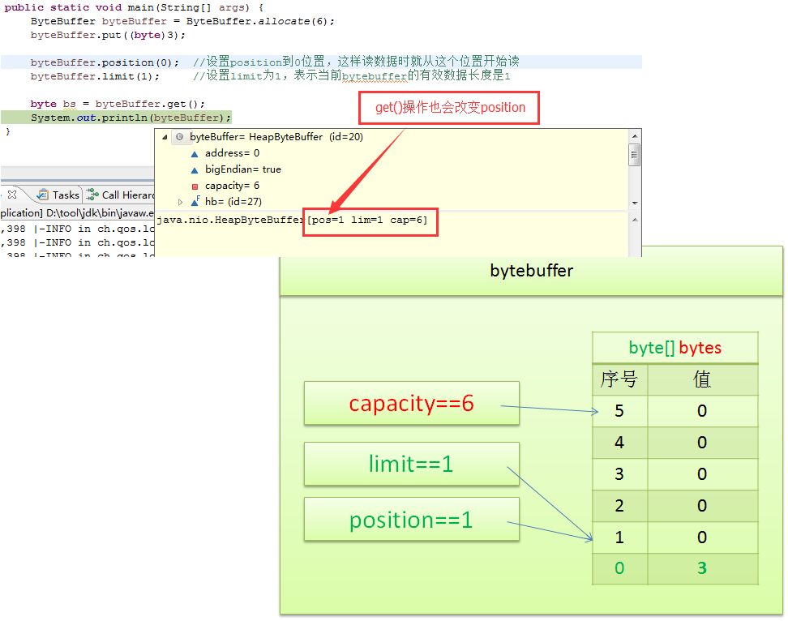

用极易的方式认识一下bytebuffer
-
bytebuffer之第一眼印象
我们可以把bytebuffer理解成如下几个成员组成的一个新对象，对，就是一个普通的java对象，像string一样的java对象。（强调一下，这里只是说这样理解，实际上有些bytebuffer的实现类并非这样实现，并且这里只列出掌握bytebuffer所需要的最小知识集合，其它诸如mark等字段本文并不介绍，以免增加初学者的惑度）- byte[] bytes: 用来存储数据
- int capacity: 用来表示bytes的容量，那么可以想像capacity就等于bytes.size()，此值在初始化bytes后，是不可变的。
- int limit: 用来表示bytes实际装了多少数据，可以容易想像得到limit <= capacity，此值是可灵活变动的
- int position: 用来表示在哪个位置开始往bytes写数据或是读数据，此值是可灵活变动的

bytebuffer之常用操作及各操作对内部变量带来的变化
创建bytebuffer: ByteBuffer.allocate(6)

写入一个字节: byteBuffer.put((byte)3)
读取一个字节: byte bs = byteBuffer.get()
对于刚刚写好的bytebuffer，我们要读取它的内容，需要先设置一下position和limit，否则读的位置就不对
我们看一下，设置position和limit后，bytebuffer的内部变化byteBuffer.position(0); //设置position到0位置，这样读数据时就从这个位置开始读 byteBuffer.limit(1); //设置limit为1，表示当前bytebuffer的有效数据长度是1接下来，我们就可以读取刚才写入的数据了byte bs = byteBuffer.get();
bytebuffer之使用心得